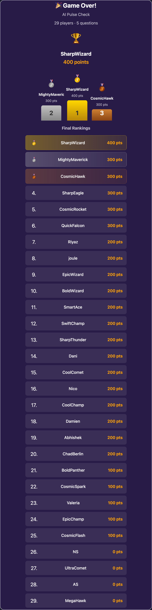

Global Head of Demo Build & AI Portfolio · SAP
Building tools I wish existed. Writing about AI and what actually ships.
I lead the demo build and AI portfolio team at SAP — a group of passionate, curious people who genuinely care about making technology feel real, not just impressive on a slide. We build the narratives, demos, and experiences that help customers and partners see what's possible. I've spent 25+ years in presales engineering across SAP, Infosys, and two startups doing exactly that.
On the side, I build the tools I wish existed. Building keeps me honest about what technology actually does versus what it promises.
We're drowning in tabs. Research piles up. Notes get lost. I searched for a privacy-first tool that handles real power-user chaos without needing AI for basic organization — and found nothing. So I built TabMind.
TabMind lives in Chrome's side panel. It replaces scattered bookmarks with smart workspaces — role-based collections of links, notes, and context that travel with you across every tab.
| 🗂 Workspaces | Organize links and notes by role, project, or domain — switch in one click |
| 📸 Session Capture | Save all open tabs as a named workspace, restore anytime |
| 🔖 Bookmark Import | Pull Chrome bookmarks in, auto-grouped and deduplicated |
| 📦 Workspace Packs | Install curated packs (AI, DevOps, Finance, Career, SAP, and more) |
| 📝 Markdown Notes | Rich notes with Write/Preview toggle alongside your links |
| 🔒 Privacy-first | Everything in chrome.storage.local — no account, no server, no tracking |
Install on Chrome View page LinkedIn post
I do a lot of research. Articles, papers, YouTube talks — and I kept losing the thread because my highlights lived in paid tools that wanted an account, a subscription, or both. So I built Mark: highlight anything, store it locally, no sign-up, no cost, no cloud.
Mark lives in Chrome's side panel. Select any text on any webpage — a toolbar appears instantly, you pick a color, and the highlight is saved permanently. No account. No cloud. No friction.
Come back tomorrow, next week, or next year — your highlights are exactly where you left them.
| ✏️ One-click highlighting | Select text → pick a color. Works on every website, article, and blog post |
| 🎬 YouTube transcripts | Searchable transcript panel with timestamp-linked highlights |
| 📓 Obsidian export | Export as > [!quote] callout blocks — ready to paste |
| 🔗 Notion export | Push highlights directly to a Notion page |
| 🌐 Notebook export | Beautiful standalone HTML with key highlights and table of contents |
| 🔒 Privacy-first | Everything in chrome.storage.local — no account, no server, no tracking |
For SAP partners and sellers, preparing SmartRecruiters demos meant hours of manual data staging, generic scenarios, and inconsistent messaging. The Demo Companion cuts demo prep from 2+ hours to 15 minutes.
| ⚡ 90% time savings | 15-minute prep vs. 2+ hours of manual staging |
| 🏭 Industry templates | Healthcare, Tech, Manufacturing, Retail, Finance, Hospitality |
| 🎨 Career site themes | 4 themes to show the art of the possible |
| 🌍 Live demo environment | 20+ jobs, 100+ candidates, real data across 4 regions |
| 🤖 Agentic examples | Agentic recruiting, custom offer letters, career site extensions |
Request access (SAP Partners) LinkedIn post
What if AI agents weren't just tools — but actual teammates with goals, skills, and performance reviews?
At SAP, we built a multi-agent platform where specialized agents are modeled as employees in SuccessFactors: they exist in the org chart, have competencies, log actions as CPM activities, and get goals reviewed by managers. We've extended this to 17 agents across the SAP ecosystem — S/4HANA Finance, Ariba, SAC, IBP, and EHS — collaborating via the A2A Protocol.
| 🎯 Human-in-the-loop | Task queue with approval workflow — no black box |
| 🔍 ReAct reasoning | Full thought loops via LangGraph |
| 📊 CPM integration | All actions recorded and linked to goals in SuccessFactors |
| 🤝 Multi-agent | 17 agents across SAP ecosystem, A2A Protocol for orchestration |
| 🚀 Joule ready | Deploy as SAP Joule skill |
Extending SmartRecruiters with predictive intelligence — helping recruiters act before candidates disengage.
SmartRecruiters already provides powerful tools for sourcing, tracking, and hiring. This adds a predictive layer: a custom agent that proactively surfaces issues before they become problems.
| 🚨 Bottleneck detection | Compares how long candidates sit in each stage against benchmarks — flags root causes and suggests next steps |
| 📉 Disengagement risk scoring | A senior engineer in your pipeline for two weeks likely has other offers. Scores each candidate by inactivity, seniority, and stage |
| 📅 Timeline forecasting | Uses real conversion rates to predict when you'll actually fill each role — data-driven answers, not estimates |
| 💬 Plain-language answers | Ask "who's at risk?" and get back a clear explanation, not a dashboard to interpret |
| 🔔 Proactive Teams alerts | Pushes alerts when something needs attention — insights come to you, not the other way around |
Tech stack: SAP AI Core · ReAct pattern (LangChain + LangGraph) · SmartRecruiters API · FastAPI · Microsoft Teams Adaptive Cards
The LLM is the "voice" of the agent — it interprets questions and explains results in plain language. The actual analysis (bottleneck severity, risk scoring, timeline math) runs in deterministic Python. Consistent, explainable, and about 1,000 lines of code.
The full source is open on GitHub under the Apache 2.0 license — fork it, extend it, or use it as a reference for your own SAP AI Core agent.
Read the blog GitHub — Apache 2.0 LinkedIn post
SAP Joule is powerful. But handing someone access and a PDF doesn't drive adoption. Joule Quest turns Joule training into an interactive, quest-based experience — users earn points, unlock badges, and learn by actually doing, not reading.
55 curated quests across SuccessFactors, S/4HANA, and SAP IBP. It auto-detects which SAP system you're on and adapts accordingly.
| 🗺 Quest library | 55 quests across 6 learning journeys — Employee, Manager, Sales, Procurement, Delivery, SCM Planning |
| 🏆 Points & badges | Progressive difficulty with a visual achievement system |
| 🌍 11 languages | Fully translated, including Joule prompts |
| 🎪 Kiosk & event mode | Auto-cycles for conference booths and demo kiosks |
| 📊 Local analytics | Completion tracking and CSV export — nothing leaves the browser |
| 🔒 Privacy-first | All data in chrome.storage.local — no account, no server |
60% better retention vs. traditional training. 3× faster Joule onboarding.
LinkedIn — S/4HANA LinkedIn — SuccessFactors
Training doesn't have to end when the slides start. Joule Quest Arena is a real-time multiplayer quiz platform — hosts put a QR code on screen, the room scans in, and 30 people are competing on SAP knowledge in under 60 seconds.
25 quiz games covering AI, SuccessFactors, S/4HANA, BTP, Joule agents, and more. Built for Sapphire, sales kickoffs, partner days, and training sessions where the audience needs to stay awake.
| 📱 Join by QR or PIN | Players join on any device — no app, no account, no friction |
| ⚡ Real-time scoring | Leaderboard updates live as answers come in |
| 🎯 25 curated games | AI industry, Joule agents, S/4HANA, BTP, SuccessFactors, sustainability, and more |
| 🎪 Event mode | Filter and isolate games per event — Sapphire, SKO, partner days |
| 😂 Emoji reactions | Players send live reactions during gameplay |
| 📊 Host view | See answer aggregation per question — know where the room stands |
